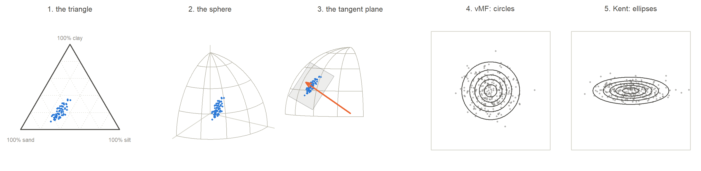
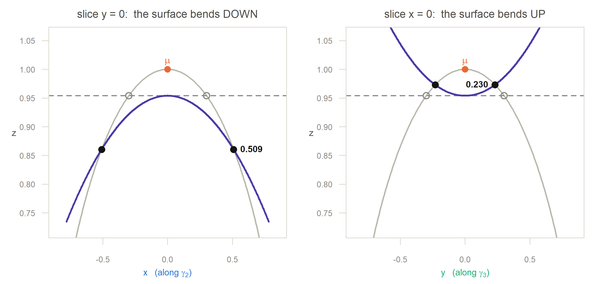
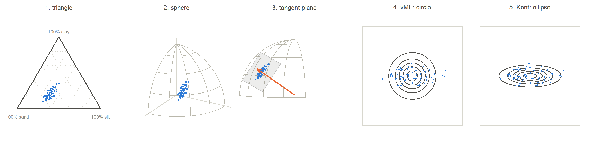

A step-by-step picture of the geometry behind the Kent distribution for compositional data
What this page is
Five pictures, in order, of one idea:
a triangle → a sphere → a flat plane touching the sphere → a circle → an ellipse
Every figure uses the same 60 soil samples, so you can watch the identical points travel through each stage. No step is skipped, and nothing is assumed beyond knowing what a proportion is.
par(mfrow = c(1, 5))
## 1 simplex
tern_full(list(Z), cols = pal$g2, cexs = 0.55, pchs = 16,
main = "1. the triangle")
## 2 sphere
V <- view_basis(c(1.05, 0.62, 0.52))
blank(xr = c(-0.95, 0.95), yr = c(-0.35, 1.08), mar = c(1.0, 0.2, 1.8, 0.2))
title(main = "2. the sphere", cex.main = 0.95, font.main = 1, col.main = pal$ink2)
for (i in 1:3) { e <- rep(0, 3); e[i] <- 1.12; seg3(c(0,0,0), e, V, pal$rule, lwd = 1.1) }
draw_sphere(V, octant = TRUE)
sphere_pts(U, V, col = pal$g2, cex = 0.55, alpha = 0.95)
## 3 tangent plane
V <- oct_view(46)
blank(xr = c(-0.95, 0.95), yr = c(-0.35, 1.08), mar = c(1.0, 0.2, 1.8, 0.2))
title(main = "3. the tangent plane", cex.main = 0.95, font.main = 1, col.main = pal$ink2)
draw_sphere(V, octant = TRUE)
tangent_patch(MUH, BH, 0.30, V)
sphere_pts(U, V, col = pal$g2, cex = 0.5, alpha = 0.95)
arrow3(c(0,0,0), MUH*1.14, V, pal$mu, lwd = 2.2)
## 4 vMF
tangent_panel(KAP_VMF, 0, 3.3*sqrt(LAM2), n_pts = 260, seed = 3, axes = FALSE,
main = "4. vMF: circles")
## 5 Kent
tangent_panel(KAPH, BETH, 3.3*sqrt(LAM2), n_pts = 260, seed = 3, axes = FALSE,
main = "5. Kent: ellipses")
A composition is a set of proportions that add up to 1. Our example is soil texture: the fraction of a sample that is sand, silt and clay.
\[\mathbf z=(z_{\text{sand}},\,z_{\text{silt}},\,z_{\text{clay}}), \qquad z_j\ge 0,\qquad z_1+z_2+z_3=1 .\]
Here are the first four of our 60 samples.
knitr::kable(round(cbind(`#` = 1:4, Z[1:4, ], sum = rowSums(Z[1:4, ])), 4))| # | sand | silt | clay | sum |
|---|---|---|---|---|
| 1 | 0.3482 | 0.2998 | 0.3519 | 1 |
| 2 | 0.5952 | 0.2907 | 0.1141 | 1 |
| 3 | 0.4656 | 0.3274 | 0.2069 | 1 |
| 4 | 0.4623 | 0.2925 | 0.2452 | 1 |
Because the three numbers must add to 1, only two of them are free: tell me sand and silt and I can work out clay. So although each sample has three numbers, the data really live in a two-dimensional space.
That space is a triangle. Each corner is “100% of one component”. A point in the middle is an equal mixture. The closer a point sits to a corner, the more of that component the sample contains. Statisticians call this triangle the simplex.
Why we cannot just use ordinary statistics here
The triangle has edges. A normal distribution does not: it spreads probability everywhere, including to negative proportions and to totals above 1, which are impossible. We need a geometry that respects the constraint instead of fighting it. The next step gives us one.
Take the square root of each part:
\[\mathbf u=\sqrt{\mathbf z}=\bigl(\sqrt{z_1},\,\sqrt{z_2},\,\sqrt{z_3}\bigr).\]
Now compute the squared length of \(\mathbf u\):
\[\|\mathbf u\|^2=u_1^2+u_2^2+u_3^2=z_1+z_2+z_3=1 .\]
Every transformed point has length exactly 1. Points at distance 1 from the origin form the surface of a ball — a sphere. So the square root takes our triangle and lays it on a sphere, with nothing lost: square the result and you get the composition back.
A worked case, using sample 1:
z1 <- Z[1, ]; u1 <- sqrt(z1)
knitr::kable(data.frame(
quantity = c("composition z", "square root u = sqrt(z)",
"squared length of u", "squared back, u^2"),
sand = c(round(z1[1],4), round(u1[1],4), round(u1[1]^2,4), round(u1[1]^2,4)),
silt = c(round(z1[2],4), round(u1[2],4), round(u1[2]^2,4), round(u1[2]^2,4)),
clay = c(round(z1[3],4), round(u1[3],4), round(u1[3]^2,4), round(u1[3]^2,4)),
total = c(1, round(sum(u1),4), round(sum(u1^2),4), 1), check.names = FALSE))| quantity | sand | silt | clay | total |
|---|---|---|---|---|
| composition z | 0.3482 | 0.2998 | 0.3519 | 1.0000 |
| square root u = sqrt(z) | 0.5901 | 0.5476 | 0.5932 | 1.7309 |
| squared length of u | 0.3482 | 0.2998 | 0.3519 | 1.0000 |
| squared back, u^2 | 0.3482 | 0.2998 | 0.3519 | 1.0000 |
Because square roots are never negative, every \(u_j\ge0\). So the points cannot land just anywhere on the sphere — only on the corner where all three coordinates are positive. That corner is one eighth of the sphere.
What we gained
The constraint “the parts add to 1” has become “the length is 1”. The first is awkward to model; the second is the natural home of a whole family of distributions built for directions. We have swapped a hard problem for one that is already solved.
Here are the same 60 samples, now as points on the sphere, seen from two angles. Nothing has been changed — only the way we are looking at them.
Where is the middle of the cloud? We cannot just average the points: the average of points on a sphere falls inside the sphere, not on it. So we average, then stretch the result back out to length 1:
\[\bar{\mathbf u}=\frac1n\sum_{i=1}^{n}\mathbf u_i, \qquad \hat{\boldsymbol\mu}=\frac{\bar{\mathbf u}}{\|\bar{\mathbf u}\|}.\]
knitr::kable(round(rbind(
`average of the 60 unit vectors` = ubar,
`mean direction (length 1)` = MUH,
`squared back to a composition` = MUH^2), 4))| sand | silt | clay | |
|---|---|---|---|
| average of the 60 unit vectors | 0.7055 | 0.5429 | 0.4463 |
| mean direction (length 1) | 0.7084 | 0.5452 | 0.4482 |
| squared back to a composition | 0.5019 | 0.2972 | 0.2009 |
The length we divided away, \(\bar R=0.9958\), is itself useful: it is close to 1 when the data are tightly clustered, and close to 0 when they are scattered all over the sphere.
Rest a flat sheet of card on the sphere so it touches at exactly one point — the mean direction. That sheet is the tangent plane. It is the set of directions that are at right angles to \(\hat{\boldsymbol\mu}\):
\[T_{\hat{\boldsymbol\mu}}=\{\mathbf v:\hat{\boldsymbol\mu}^{\!\top}\mathbf v=0\}.\]
Why bother? Because a sphere is curved and awkward, while a plane is flat and familiar. If the data are tightly packed around \(\hat{\boldsymbol\mu}\) — and ours are — then the little patch of sphere they occupy is almost flat, just as a city looks flat even though the Earth is round. On that patch we can use ordinary two-dimensional thinking.
Now flatten. For each sample, drop a perpendicular from the point on the sphere onto the tangent plane. What is left after removing the part that points along \(\hat{\boldsymbol\mu}\) is the sideways displacement:
\[\mathbf v_i=\mathbf u_i-(\hat{\boldsymbol\mu}^{\!\top}\mathbf u_i)\,\hat{\boldsymbol\mu}.\]
This displacement lies in the plane, so two numbers describe it completely. We measure it along two perpendicular directions in the plane, which we will call \(\hat{\boldsymbol\gamma}_2\) and \(\hat{\boldsymbol\gamma}_3\):
\[v_{i2}=\hat{\boldsymbol\gamma}_2^{\!\top}\mathbf u_i, \qquad v_{i3}=\hat{\boldsymbol\gamma}_3^{\!\top}\mathbf u_i .\]
Those two numbers are the tangent coordinates of sample \(i\). We have gone from three numbers on a curved surface to two numbers on a flat one, losing almost nothing.
Look at the right-hand panel. The cloud is clearly wider than it is tall. That is the stretch we first noticed back in the triangle, and it has survived every step. The last two steps are about which distribution can describe it.
The simplest distribution for data on a sphere is the von Mises–Fisher distribution, written vMF. It has just two parameters:
Its density is \(f(\mathbf u)\propto\exp(\kappa\,\boldsymbol\mu^{\!\top}\mathbf u)\). The only thing it looks at is \(\boldsymbol\mu^{\!\top}\mathbf u\), which is the cosine of the angle between \(\mathbf u\) and \(\boldsymbol\mu\). In other words, vMF only cares how far a point is from the centre, never in which direction.
That has an immediate consequence on the tangent plane. All points at the same distance from the centre are equally likely, and the set of points at a fixed distance from a centre is a circle. So the contours must be circles, and the spread must be the same in every direction, namely \(1/\kappa\).
The Kent distribution adds one term to the vMF exponent:
\[f(\mathbf u)\;\propto\; \exp\Bigl\{\kappa\,\boldsymbol\mu^{\!\top}\mathbf u \;+\;\beta\bigl[(\boldsymbol\gamma_2^{\!\top}\mathbf u)^2 -(\boldsymbol\gamma_3^{\!\top}\mathbf u)^2\bigr]\Bigr\}.\]
Read the new term with the tangent coordinates of Step 5 in mind: it is \(\beta(v_2^2-v_3^2)\). It adds probability when a point leans along \(\boldsymbol\gamma_2\) and removes it when the point leans along \(\boldsymbol\gamma_3\). The circle gets pulled out one way and squeezed the other: an ellipse.
| meaning | what it controls in the picture | |
|---|---|---|
| \(\boldsymbol\mu\) | mean direction | where the cloud sits; the centre of the ellipse |
| \(\kappa\) | concentration | the size of the ellipse — large \(\kappa\), small ellipse |
| \(\boldsymbol\gamma_2\) | first axis direction | the long axis — which way the ellipse points |
| \(\boldsymbol\gamma_3\) | second axis direction | the short axis, at right angles to \(\boldsymbol\gamma_2\) |
| \(\beta\) | ovalness | how stretched the ellipse is; \(\beta=0\) gives a circle, i.e. vMF |
The spread along each axis is
\[\lambda_2=\frac1{\kappa-2\beta}\ \ (\text{along }\boldsymbol\gamma_2), \qquad \lambda_3=\frac1{\kappa+2\beta}\ \ (\text{along }\boldsymbol\gamma_3),\]
so \(\beta\) pushes the two apart while \(\kappa\) sets their overall scale. This is also where the condition \(2\beta<\kappa\) comes from: any larger and \(\lambda_2\) stops being a positive, finite variance, and the shape stops being a single bump.
The fitted long axis is \(\hat{\boldsymbol\gamma}_2=(-0.572,\ 0.072,\ 0.817)\) in the order (sand, silt, clay). Its two biggest entries belong to clay and sand, and they have opposite signs: moving along this axis, clay rises while sand falls. The third component, silt, has coefficient 0.072 — near enough to zero that it hardly changes along this axis.
The ellipse is 2.8 times longer than it is wide (\(\lambda_2/\lambda_3=8.1\)). In plain words: these soils differ mainly by trading clay against sand, and hardly at all in silt — exactly the stretch we saw in the triangle in Step 1, now measured.
knitr::kable(data.frame(
quantity = c("mean composition", "kappa", "beta", "lambda2", "lambda3",
"axis ratio sqrt(lambda2/lambda3)", "2*beta < kappa ?"),
fitted = c(paste(sprintf("%.3f", MUH^2), collapse = ", "),
sprintf("%.0f", KAPH), sprintf("%.0f", BETH),
sprintf("%.5f", LAM2), sprintf("%.5f", LAM3),
sprintf("%.2f", sqrt(LAM2/LAM3)),
ifelse(2*BETH < KAPH, "yes", "no")),
`true value` = c(paste(sprintf("%.3f", PI0), collapse = ", "),
sprintf("%.0f", KAP0), sprintf("%.0f", BET0),
sprintf("%.5f", 1/(KAP0 - 2*BET0)), sprintf("%.5f", 1/(KAP0 + 2*BET0)),
sprintf("%.2f", sqrt((KAP0 + 2*BET0)/(KAP0 - 2*BET0))),
"yes"),
check.names = FALSE))| quantity | fitted | true value |
|---|---|---|
| mean composition | 0.502, 0.297, 0.201 | 0.500, 0.300, 0.200 |
| kappa | 608 | 700 |
| beta | 237 | 270 |
| lambda2 | 0.00745 | 0.00625 |
| lambda3 | 0.00092 | 0.00081 |
| axis ratio sqrt(lambda2/lambda3) | 2.84 | 2.78 |
| 2*beta < kappa ? | yes | yes |
Up to now the contours have simply appeared, drawn for you. This step shows the machinery that produces them. It is the one piece of the subject that is worth seeing in three dimensions rather than taking on trust.
Put the mean direction at the North Pole, \(\boldsymbol\mu=(0,0,1)\), and let \(\boldsymbol\gamma_2\) be the \(x\) axis and \(\boldsymbol\gamma_3\) the \(y\) axis. Then \(\boldsymbol\mu^{\!\top}\mathbf u=z\), \(\boldsymbol\gamma_2^{\!\top}\mathbf u=x\) and \(\boldsymbol\gamma_3^{\!\top}\mathbf u=y\), so the Kent density is just
\[f(\mathbf u)\;\propto\;\exp\{\kappa z+\beta(x^2-y^2)\}.\]
A contour is a set of points where the density takes one fixed value. Because the exponential is increasing, fixing the density is the same as fixing the exponent. Call that fixed value \(C\):
\[\kappa z+\beta(x^2-y^2)=C \qquad\Longleftrightarrow\qquad z=\frac{C-\beta(x^2-y^2)}{\kappa}. \tag{1}\]
Three different objects — do not mix them up
what it is the sphere \(x^2+y^2+z^2=1\) where the observations live. Every data point is on it. the level-set surface Equation 1 an auxiliary surface. It is not a probability, not a density, and no data lie on it. It is scaffolding: a bookkeeping device for “all the places in space where the exponent equals \(C\)”. their intersection the Kent density contour. These are the points that are both possible observations and equally likely. In the figures the auxiliary surface is drawn in violet, the same colour this site uses elsewhere for scaffolding that is chosen rather than measured.
\[\boxed{\ \text{level-set surface}\ }\ \ \cap\ \ \boxed{\ \text{unit sphere}\ }\ \ =\ \ \boxed{\ \text{Kent contour}\ }\]
If \(\beta=0\) the \(x^2-y^2\) term vanishes and Equation 1 collapses to
\[z=\frac{C}{\kappa},\]
which has no \(x\) or \(y\) in it at all: a flat horizontal plane. A horizontal plane cuts a sphere in a circle. That is the whole reason vMF contours are circular — there is nothing in its level-set surface that can tell one sideways direction from another.
Turn \(\beta\) up and the flat plane buckles into a saddle. The intersection stops being a circle.
This is the heart of it, and it is easiest to see in two flat slices.
Set \(y=0\) and look in the \(x\)–\(z\) plane. The level-set surface becomes
\[z=\frac{C}{\kappa}-\frac{\beta}{\kappa}x^{2},\]
a downward parabola. As you move away from the pole along \(x\) it sinks below the vMF height \(C/\kappa\), so it meets the sphere further from the pole. The contour is pushed out.
Now set \(x=0\) and look in the \(y\)–\(z\) plane:
\[z=\frac{C}{\kappa}+\frac{\beta}{\kappa}y^{2},\]
an upward parabola. It climbs above \(C/\kappa\), so it meets the sphere closer to the pole. The contour is pulled in.
z0 <- CC / KA
xr_vmf <- sqrt(1 - z0^2)
par(mfrow = c(1, 2), family = "sans")
slice <- function(sign, lab, axcol, hit) {
tt <- seq(-0.78, 0.78, length.out = 400)
zz <- z0 + sign * (BE/KA) * tt^2
par(mar = c(3.4, 3.6, 2.0, 0.8))
plot(NA, xlim = c(-0.85, 0.85), ylim = c(0.72, 1.06), axes = FALSE, xlab = "", ylab = "")
title(main = lab, cex.main = 0.95, font.main = 1, col.main = pal$ink2)
arc <- seq(-pi/2, pi/2, length.out = 400)
lines(sin(arc), cos(arc), col = pal$sph, lwd = 2.2)
abline(h = z0, col = pal$mut, lwd = 1.6, lty = 2)
lines(tt, zz, col = pal$bs, lwd = 2.6)
## the crossing point, taken from the exact intersection curve rather than
## from a grid search, so the figure and the table cannot disagree
hz <- sqrt(max(0, 1 - hit^2))
points(c(hit, -hit), c(hz, hz), pch = 16, cex = 1.4, col = pal$ink)
points(c(xr_vmf, -xr_vmf), c(z0, z0), pch = 1, cex = 1.3, col = pal$mut, lwd = 1.6)
points(0, 1, pch = 16, cex = 1.3, col = pal$mu)
text(0, 1, expression(mu), col = pal$mu, pos = 3, cex = 0.9, font = 2, offset = 0.3)
axis(1, col = pal$rule, col.axis = pal$mut, cex.axis = 0.72)
axis(2, col = pal$rule, col.axis = pal$mut, cex.axis = 0.72, las = 1)
mtext(axcol$lab, side = 1, line = 2.1, cex = 0.8, col = axcol$col)
mtext("z", side = 2, line = 2.4, cex = 0.8, col = pal$ink2, las = 1)
text(hit, hz, sprintf("%.3f", abs(hit)), pos = if (sign < 0) 4 else 2,
cex = 0.78, col = pal$ink, font = 2)
box(col = pal$rule)
abs(hit)
}
h1 <- slice(-1, "slice y = 0: the surface bends DOWN",
list(lab = expression(x ~ " (along " * gamma[2] * ")"), col = pal$g2),
hit = max(abs(CURVE[, 1])))
h2 <- slice(+1, "slice x = 0: the surface bends UP",
list(lab = expression(y ~ " (along " * gamma[3] * ")"), col = pal$g3),
hit = max(abs(CURVE[, 2])))
knitr::kable(data.frame(
direction = c("along gamma2 (the x axis)", "along gamma3 (the y axis)", "ratio"),
`vMF, beta = 0` = c(sprintf("%.3f", xr_vmf), sprintf("%.3f", xr_vmf), "1.00"),
`Kent, beta = 18` = c(sprintf("%.3f", max(abs(CURVE[,1]))),
sprintf("%.3f", max(abs(CURVE[,2]))),
sprintf("%.2f", max(abs(CURVE[,1]))/max(abs(CURVE[,2])))),
check.names = FALSE))| direction | vMF, beta = 0 | Kent, beta = 18 |
|---|---|---|
| along gamma2 (the x axis) | 0.300 | 0.509 |
| along gamma3 (the y axis) | 0.300 | 0.230 |
| ratio | 1.00 | 2.21 |
The intersection is a genuine curve on the sphere — it is not an ellipse, because the sphere is curved. But look at it from directly above \(\boldsymbol\mu\), in the tangent plane of Step 4, and it is very nearly one. That near-ellipse is what Step 7 was drawing.
Three things are worth doing with the sliders.
Set \(\beta\) to 0 and the violet surface flattens into a horizontal plane, and the contour snaps to a circle: that is von Mises–Fisher. Push \(\beta\) up and watch the saddle deepen and the contour stretch. Push it past \(\kappa/2\) — the readout will warn you — and the surface bends so hard that it no longer cuts a single closed loop around the pole: the model has stopped being a single bump, which is exactly what the constraint \(2\beta<\kappa\) forbids.
Finally, move the contour level slider on its own. The surface slides up and down without changing shape, and the contour grows and shrinks. That is one density, sliced at different heights — the spherical equivalent of the rings on a contour map.
par(mfrow = c(1, 5))
tern_full(list(Z), cols = pal$g2, cexs = 0.55, pchs = 16, main = "1. triangle")
V <- view_basis(c(1.05, 0.62, 0.52))
blank(xr = c(-0.95, 0.95), yr = c(-0.35, 1.08), mar = c(1.0, 0.2, 1.8, 0.2))
title(main = "2. sphere", cex.main = 0.95, font.main = 1, col.main = pal$ink2)
for (i in 1:3) { e <- rep(0, 3); e[i] <- 1.12; seg3(c(0,0,0), e, V, pal$rule, lwd = 1.1) }
draw_sphere(V, octant = TRUE); sphere_pts(U, V, col = pal$g2, cex = 0.55, alpha = 0.95)
V <- oct_view(46)
blank(xr = c(-0.95, 0.95), yr = c(-0.35, 1.08), mar = c(1.0, 0.2, 1.8, 0.2))
title(main = "3. tangent plane", cex.main = 0.95, font.main = 1, col.main = pal$ink2)
draw_sphere(V, octant = TRUE); tangent_patch(MUH, BH, 0.30, V)
sphere_pts(U, V, col = pal$g2, cex = 0.5, alpha = 0.95)
arrow3(c(0,0,0), MUH*1.14, V, pal$mu, lwd = 2.2)
tangent_panel(KAP_VMF, 0, R6, n_pts = 0, axes = FALSE, main = "4. vMF: circle")
points(V2, V3, pch = 16, cex = 0.5, col = pal$g2)
tangent_panel(KAPH, BETH, R6, n_pts = 0, axes = FALSE, main = "5. Kent: ellipse")
points(V2, V3, pch = 16, cex = 0.5, col = pal$g2)
The one-line version
Squaring roots puts compositions on a sphere; the tangent plane makes the sphere flat again; and the only question left is whether the flattened cloud is round (vMF) or oval (Kent). For soil texture, it is oval.